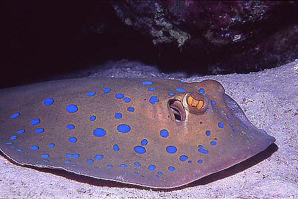
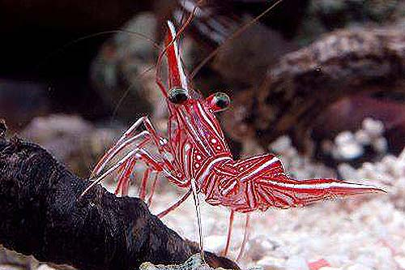

|
Cirurgião Pó Azul |
O cirurgião pó azul (Acanthurus leucosternon) é um dos mais
belos peixes de água salgada para aquário. Também é comunente
chamado de pó azul tang. |
 |
Bornella Anguilla |
O anguilla Bornella, cresce até 80 milímetros. Ele tem uma
característica padrão de cor estilo mosaico. Seu nome [anguilla =
enguia] refere-se ao modo como nada. |
| 
|
Raia Pintada Azul |
( Neotrygon Kuhlii) é uma espécie de raia da família Dasyatidae.
|
| 
|
Camarão Dançante |
O camarão dançante é um nome comum para qualquer uma das
espécies de camarão pertencente à família taxonômica
Rhynchocinetidae. Eles são geralmente distinguido de outras
espécies de camarão por seus bicos móveis. |